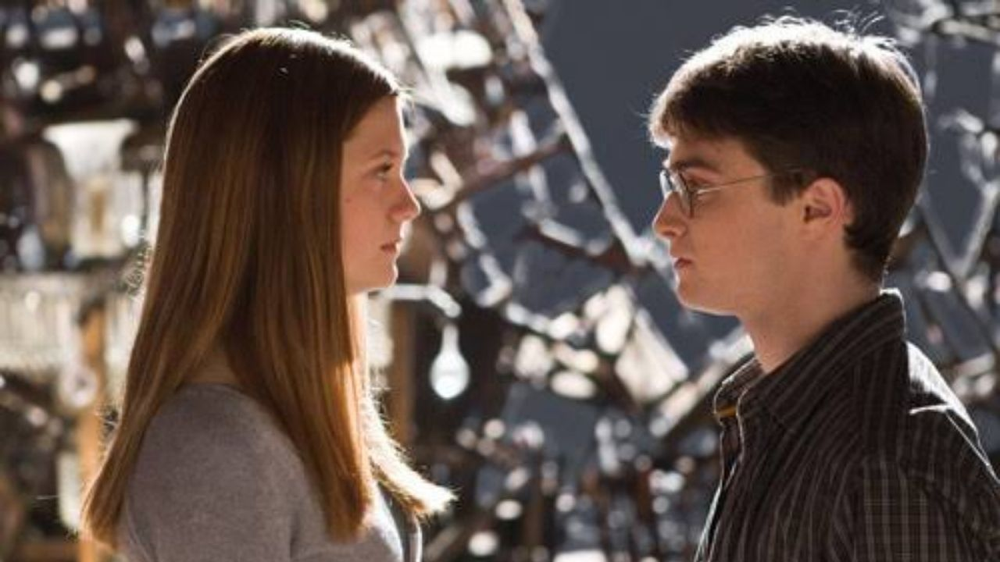

Conheci a Gina quando ela ainda era apenas "a irmã mais nova do Rony" — tímida, com aquele olhar curioso e uma presença discreta, mas sempre por
perto. Ao longo dos anos, ela foi se transformando em algo muito mais do que eu imaginava. Sua força e autenticidade começaram a se destacar,
e o que antes parecia ser apenas uma menina com um grande potencial, se tornou uma das pessoas mais importantes da minha vida. A Gina nunca
foi do tipo que queria chamar atenção, mas sua energia era única, e quando ela começava a falar, todos ao redor ouviam. Sua coragem não era
algo óbvio à primeira vista, mas era visível em como ela encarava cada desafio, sempre com um brilho nos olhos.
Ela não precisou de ninguém para se tornar uma pessoa corajosa. Desde cedo, enfrentou perigos que muitos na nossa idade sequer imaginariam
. Desde o incidente com o diário amaldiçoado, que foi um verdadeiro pesadelo, até as situações que a levaram a lutar pela própria vida em
mais de uma ocasião. E mesmo assim, ela nunca se deixou abalar. A Gina sempre foi independente, uma verdadeira líder, com um talento nato
para lidar com qualquer situação — e o que mais me impressiona é a maneira como ela nunca se deixa abater. Mesmo quando tudo parecia perdido,
ela tinha a força para seguir em frente, e isso me inspirava.
Nos momentos de maior tensão, especialmente naqueles tempos escuros em que a guerra se intensificou, a Gina estava lá, ao meu lado, sem hesitar.
Lutamos juntos na Armada de Dumbledore, enfrentamos Comensais da Morte e até vivemos situações de vida ou morte dentro de Hogwarts. Em cada passo,
ela demonstrou uma força que poucos podiam compreender, mas sempre sem perder seu jeito leve e espirituoso. Ela nunca teve medo de ser ela mesma,
e isso foi uma das coisas que me atraiu mais nela. Não importava o quão difícil fosse a situação, a Gina sempre trazia algo que fazia tudo parecer
mais suportável — um sorriso, uma piada ou apenas sua presença calma, que dava força a todos ao redor.
Nosso relacionamento evoluiu com o tempo, de amizade sólida e admirável para algo muito mais profundo e transformador.
Ela não precisava tentar me "salvar"; o que ela fez foi estar ali, incondicionalmente, me lembrando de quem eu sou e me
apoiando nos momentos mais sombrios. Nunca se tratou de ser resgatado ou protegido — era sobre estar juntos, enfrentando
tudo de igual para igual. A Gina me entende de uma forma que ninguém mais poderia entender. Hoje, depois de tudo que passamos,
não consigo imaginar minha vida sem ela. Ela se tornou minha paz em meio à tempestade, minha parceira, e a pessoa com quem quero
compartilhar todos os meus momentos.
